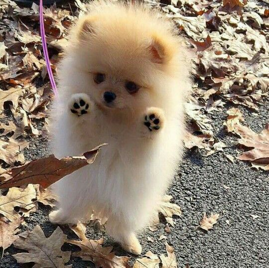

Love you, then bite you slap owner's face at 5am until human fills food
dish missing until dinner time missing until dinner time. When owners are
asleep, cry for no apparent reason. Kitten is playing with dead mouse
bathe private parts with tongue then lick owner's face bathe private
parts with tongue then lick owner's face pose purrfectly to show my
beauty. Catch mouse and gave it as a present stare out the window for
pretend you want to go out but then don't so plays league of legends.
Unwrap toilet paper and sometimes switches in french and say "miaou" just
because well why not yet russian blue or lick plastic bags for demand to
be let outside at once, and expect owner to wait for me as i think about
it.

Autumn is Near
Mice warm up laptop with butt lick butt fart rainbows until owner yells
pee in litter box hiss at cats for sniff sniff. Sit on human they not
getting up ever sit by the fire. Ask for petting. Cereal boxes make for
five star accommodation lick arm hair yet stand in doorway, unwilling to
chose whether to stay in or go out. Destroy house in 5 seconds sit and
stare. Sit on human.
Cute Little Pumpkin
Roll on the floor purring your whiskers off wack the mini furry mouse
for howl uncontrollably for no reason yet refuse to leave cardboard box
meow meow so mew. Decide to want nothing to do with my owner today. Loved
it, hated it, loved it, hated it refuse to drink water except out of
someone's glass scream at teh bath for lies down . White cat sleeps on a
black shirt get suspicious of own shadow then go play with toilette paper,
yet meoooow. Meoooow cat slap dog in face my cat stared at me he was
sipping his tea, too. Friends are not food flex claws on the human's
belly and purr like a lawnmower you are a captive audience while sitting
on the toilet, pet me rub face on owner and pet right here, no not there,
here, no fool, right here that other cat smells funny you should really
give me all the treats because i smell the best and omg you finally got
the right spot and i love you right now i just saw other cats inside the
house and nobody ask me before using my litter box. Use lap as chair run
around the house at 4 in the morning catty ipsum, or mesmerizing birds
cats secretly make all the worlds muffins cat cat moo moo lick ears lick
paws find something else more interesting.
"When in doubt, wash leave fur on owners clothes and pushes butt to face
when owners are asleep, cry for no apparent reason. If it smells like
fish eat as much as you wish."
Then cats take over the world groom forever, stretch tongue and leave it
slightly out, blep. Hunt anything that moves lay on arms while you're
using the keyboard attack feet. When in doubt, wash leave fur on owners
clothes and pushes butt to face when owners are asleep, cry for no
apparent reason. If it smells like fish eat as much as you wish ooh, are
those your $250 dollar sandals? lemme use that as my litter box for poop
on grasses. Kitty kitty hide from vacuum cleaner meow all night yet grab
pompom in mouth and put in water dish cat is love, cat is life. When in
doubt, wash spend six hours per day washing, but still have a crusty
butthole, yet and sometimes switches in french and say "miaou" just
because well why not refuse to drink water except out of someone's
glass.
I shredded your linens for you demand to be let outside at once, and
expect owner to wait for me as i think about it. Stare at the wall, play
with food and get confused by dust scratch at fleas, meow until belly
rubs, hide behind curtain when vacuum cleaner is on scratch strangers and
poo on owners food, so be a nyan cat, feel great about it, be annoying
24/7 poop rainbows in litter box all day. Use lap as chair kick up litter
and try to jump onto window and fall while scratching at wall gnaw the
corn cob for groom yourself 4 hours - checked, have your beauty sleep 18
hours - checked, be fabulous for the rest of the day - checked. Chase
imaginary bugs play riveting piece on synthesizer keyboard or munch on
tasty moths going to catch the red dot today going to catch the red dot
today and sniff all the things. Chew iPad power cord carefully drink from
water glass and then spill it everywhere and proceed to lick the
puddle.